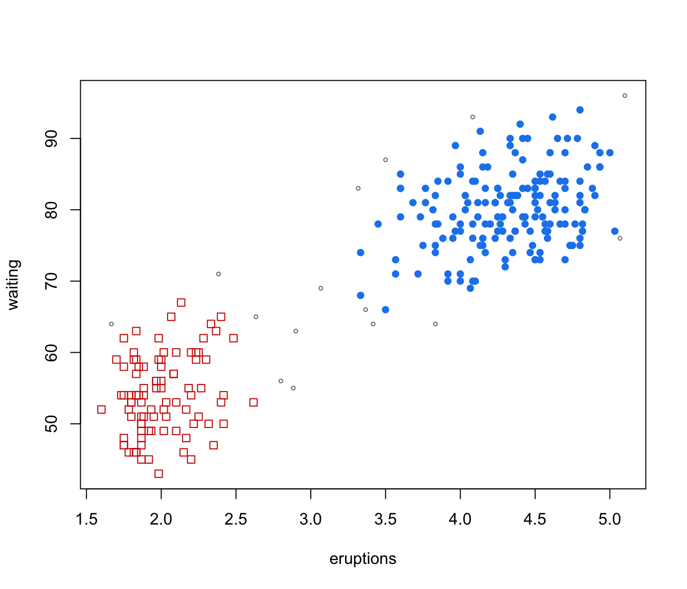

gmmhd.RdStarting with the density estimate obtained from a fitted Gaussian finite mixture model, cluster cores are identified from the connected components at a given density level. Once cluster cores are identified, the remaining observations are allocated to those cluster cores for which the probability of cluster membership is the highest.
An object returned by Mclust.
An integer specifying the number of grid points used to compute the density levels.
A list of parameters used in the dimension reduction step.
A list of parameters used in the classification step.
An object of class 'gmmhd' as returned by the function gmmhd.
A string specifying the type of plot to be produced. See Examples section.
further arguments passed to or from other methods.
Model-based clustering associates each component of a finite mixture distribution to a group or cluster. An underlying implicit assumption is that a one-to-one correspondence exists between mixture components and clusters. However, a single Gaussian density may not be sufficient, and two or more mixture components could be needed to reasonably approximate the distribution within a homogeneous group of observations.
This function implements the methodology proposed by Scrucca (2016) based on the identification of high density regions of the underlying density function. Starting with an estimated Gaussian finite mixture model, the corresponding density estimate is used to identify the cluster cores, i.e. those data points which form the core of the clusters. These cluster cores are obtained from the connected components at a given density level \(c\). A mode function gives the number of connected components as the level \(c\) is varied. Once cluster cores are identified, the remaining observations are allocated to those cluster cores for which the probability of cluster membership is the highest.
The method usually improves the identification of non-Gaussian clusters compared to a fully parametric approach. Furthermore, it enables the identification of clusters which cannot be obtained by merging mixture components, and it can be straightforwardly extended to cases of higher dimensionality.
A list of class gmmhd with the following components:
The input object of class "Mclust" representing an estimated Gaussian finite mixture model.
An object of class "MclustDA" containing the model used for the classification step.
An object of class "MclustDR" containing the dimension reduction step if performed, otherwise NULL.
The data used in the algorithm. This can be the input data or a projection if a preliminary dimension reduction step is performed.
The density estimated from the input Gaussian finite mixture model evaluated at the input data.
A list of connected components at each step.
A vector giving the number of connected components (i.e. modes) at each step.
Vector of values over a uniform grid of proportions of length ngrid.
Vector of density quantiles corresponding to proportions pn.
Vector of empirical proportions corresponding to quantiles qn.
Vector of cluster cores numerical labels; NAs indicate that an observation does not belong to any cluster core.
Vector of numerical labels giving the final clustering.
An integer giving the number of clusters.
Scrucca, L. (2016) Identifying connected components in Gaussian finite mixture models for clustering. Computational Statistics & Data Analysis, 93, 5-17.
# \donttest{
data(faithful)
mod <- Mclust(faithful)
summary(mod)
#> ----------------------------------------------------
#> Gaussian finite mixture model fitted by EM algorithm
#> ----------------------------------------------------
#>
#> Mclust EEE (ellipsoidal, equal volume, shape and orientation) model with 3
#> components:
#>
#> log-likelihood n df BIC ICL
#> -1126.326 272 11 -2314.316 -2357.824
#>
#> Clustering table:
#> 1 2 3
#> 40 97 135
plot(as.densityMclust(mod), faithful, what = "density",
points.pch = mclust.options("classPlotSymbols")[mod$classification],
points.col = mclust.options("classPlotColors")[mod$classification])
GMMHD <- gmmhd(mod)
summary(GMMHD)
#> ---------------------------------------------------------
#> GMM with high-density connected components for clustering
#> ---------------------------------------------------------
#>
#> Initial model: Mclust (EEE,3)
#>
#> Cluster cores:
#> 1 2 <NA>
#> 166 91 15
#>
#> Final clustering:
#> 1 2
#> 178 94
plot(GMMHD, what = "mode")
plot(GMMHD, what = "cores")

plot(GMMHD, what = "clusters")
# }